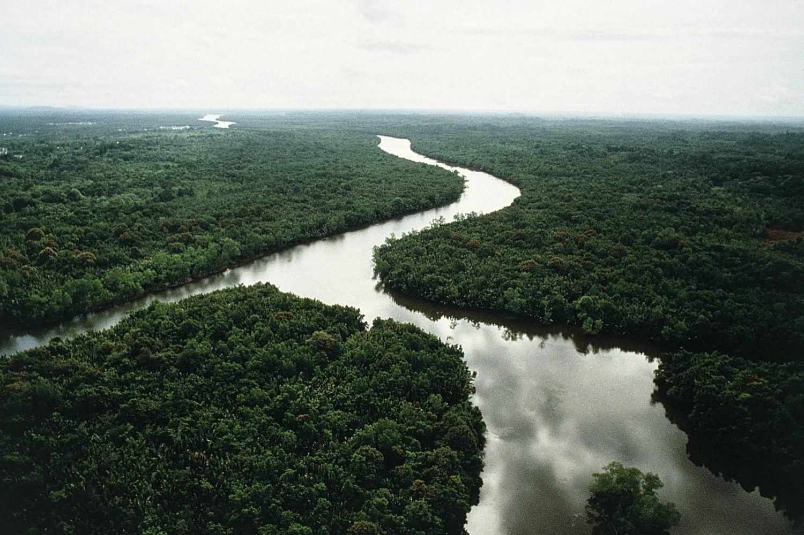

Tropical Rainforest
Overview: Tropical rainforests are dense, humid forests located near the equator. They receive high rainfall throughout the year, supporting a wide variety of plant and animal species.
Uses: Tropical rainforests provide timber, medicinal plants, and various fruits and nuts. They play a crucial role in the carbon cycle by absorbing carbon dioxide and maintaining global climate stability. They are also home to indigenous communities and provide critical resources for local economies.
Rainforests also provide habitat for a vast number of species and are a vital source of biodiversity. They are a source of valuable resources like rubber, cocoa, and essential oils.
Conservation Methods:
- Promote sustainable logging practices to avoid deforestation.
- Establish protected areas and enforce laws to prevent illegal logging.
- Support reforestation and afforestation projects.
- Encourage eco-friendly tourism to generate revenue for conservation efforts.
- Raise awareness about the importance of tropical rainforests for biodiversity and climate regulation.